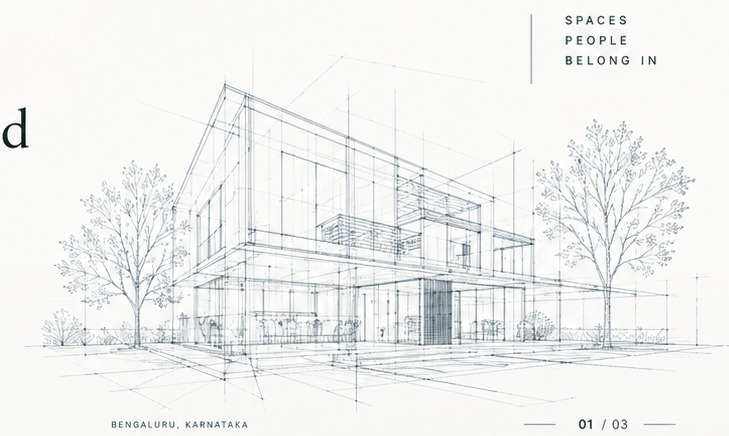

The role of elevations in shaping better neighbourhoods.
How proportion, material, shade and the street edge can give a building a clearer relationship with its surroundings.
Thoughts and practical perspectives on architecture, approvals, materials, process and the evolving city.

The journal is a place for Nsquare to share useful thinking from design development, coordination and site experience. Publish only reviewed articles here.
How proportion, material, shade and the street edge can give a building a clearer relationship with its surroundings.
A useful framework for understanding how design intent, technical drawings and coordination move together before construction.

Looking beyond first impressions to maintenance, weathering, constructability and how materials contribute to architectural character.

Notes on density, changing residential typologies and the responsibility of architecture within Bengaluru’s evolving neighbourhoods.